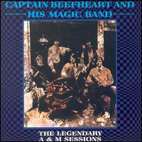
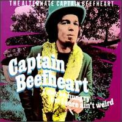
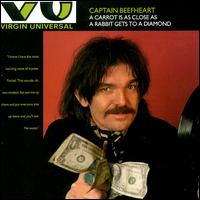
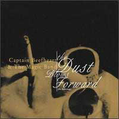
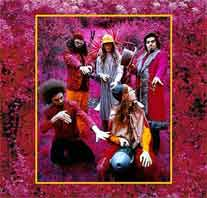
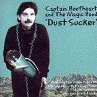
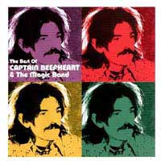
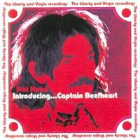
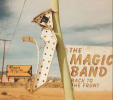
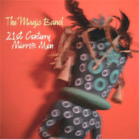

Разнообразных компиляций, конечно же, очень много. Здесь представлены наиболее интересные - с той или иной точки зрения. Строго говоря, бутлег "Dust Sucker" и диск "I May Be Hungry But I Sure Ain't Weird" назвать сборниками можно лишь с большой натяжкой, но поскольку они никак уж не являются ни альбомами, ни концертниками - они попали сюда. В конце раздела указаны релизы, не входящие в дискографию MAGIC BAND (альбомы других музыкантов, саундтреки) на которых можно услышать игру или пение Кэптэна Бифхарта. Также размещена информация о релизах возрождённого в 2002 году THE MAGIC BAND без Ван Влита.
The Legendary A&M Sessions |
I May Be Hungry But I Sure Ain't Weird
A Carrot Is As Close As A Rabbit Gets To A Diamond
The Dust Blows Forward | Grow
Fins rarities | Dust Sucker
The Best Of (Virgin & Liberty years) | Hot
Head. Introdusing...
другие работы
Back To The Front
| 21st Century Mirror Man

"THE LEGENDARY A&M SESSIONS" (11.47)Запись: 1966, Sound Recorders/Walley Heider Studios
Выпуск: 1984, A&M (США)
Впервые на CD: 1992, Edsel (Великобритания?)
1) Diddy Wah Diddy (Элиас Макдэниэл
2) Who Do You Think You're Fooling? (Дон
(запись: январь 1966; выпуск на сингле: апрель 1966)
3) Moonchild (Дэвид Гэйтс) (2.28)
4) Frying Pan (Дон Ван Влит) (2.03)
(запись: май-июнь 1966; выпуск на сингле: октябрь 1966)
5) Here I Am, I Always Am (Дон Ван Влит) (2.33)
(запись: середина(?) 1966; ранее не выпускалась)
Дон Ван Влит - вокал, губная гармоника
Даг Мун - гитара
Джерри Хэндли - бас-гитара
Алекс Снуффер - гитара (5), ударные (1-4)
Ричард Хепнер - гитара (1,2)
Пол Блэйкли - ударные (5)
Дэвид Гэйтс - клавишные (1,2), гитара(3,4)(?), подпевки (3,4)
Продюсер: Дэвид Гэйтс
КОММЕНТАРИЙ К.У.
Первый студийный опыт Бифхарта и компании, не вошедший, к сожалению, ни в
один альбом. Песни - большей частью мощные драйвовые ритм-энд-блюзы - звучат
очень уверенно, вполне могут посостязаться с материалом первой долгоиграющей
пластинки; а качество звучания, пожалуй, и посильнее, чем на ней же (в виниловом
варианте). Лучшие - "Diddy Wah Diddy" и "Frying Pan", остальные
тоже очень неплохи.

"I MAY BE HUNGRY BUT I SURE AIN'T WEIRD" (54.13)Запись: октябрь-ноябрь 1967
Выпуск: 1992, Sequel (Великобритания)
1) Trust Us (дубль 6) (7.19) *
2) Beatle Bones N' Smokin' Stones (часть 1) (3.14) *
3) Moody Liz (дубль 8) (4.37)
4) Safe As Milk (дубль 12) (5.05) *
5) Gimme Dat Harp Boy (3.38) *
6) On Tomorrow (7.01) [инструментал] *
7) Trust Us (дубль 9) (7.27) *
8) Safe As Milk (дубль 5) (4.17) *
9) Big Black Baby Shoes (4.54) [инструментал]
10) Flower Pot (3.59) [инструментал]
11) Dirty Blue Gene (2.42) [инструментал]
Дон Ван Влит - вокал, губная гармоника, волынка, шинай [индийский духовой
муз. инструмент]
Алекс Снуффер - гитара
Джефф Коттон - гитара
Джерри Хэндли - бас-гитара
Джон Френч - ударные, перкуссии
ПРИМЕЧАНИЯ:
1) Композиции, помеченные звёздочкой (*), являются "альтернативными версиями"
одноимённых, вышедших на альбоме "STRICTLY PERSONAL"
2) Все композиции содержатся на бонус-треках альбомов "SAFE
AS MILK" и "THE MIRROR MAN SESSIONS" 1999
года издания (Buddah, США)

"A CARROT IS AS CLOSE AS A RABBIT GETS TO A DIAMONDВыпуск: 1993, Virgin (Великобритания)
1) Sugar Bowl
2) Past Sure Is Tense
3) Happy Love Song
4) Floppy Boot Stomp
5) Bluejeans And Moonbeams
6) Run Paint Run Run
7) This Is The Day
8) Tropical Hot Dog Night
9) Observatory Crest
10) The Host The Ghost The Most Holy-O
11) Harry Irene
12) I Got Love On My Mind
13) Pompadour Swamp
14) Love Lies
15) Sheriff Of Hong Kong
16) Further Than We've Gone
17) Candle Mambo
18) Light Reflected Off The Oceands Of The Moon [инструментал с сингла "Ice
Cream For Crow"]
19) A Carrot Is As Close As A Rabbit Gets To A Diamond [инструментал]
ПРИМЕЧАНИЯ:
1) На сборнике представлены композиции с альбомов, выходивших на фирме Virgin;
в начале почти каждой - короткие вставки из стихов, высказываний Ван Влита или
других композиций
2) Выпущен в России на CD (Компания ДОРА, номер не указан) [только поэтому и
попал в данную дискографию; не рекомендуется, хотя на нашем безрыбье…]
КОММЕНТАРИЙ
К.У.
Даже с учётом охваченного здесь периода сборник мог быть лучше. Плохо
представлен последний альбом. Да и с пластинок 74-го года можно было наковырять
материал поинтереснее (и, желательно, меньшим объёмом). А вставочки эти к чему?

"THE DUST BLOWS FORWARD (An antology)" 2 CDВыпуск: 1999, Rhino (США)
CD1 (73.45):
1) Diddy Wah Diddy [с одноимённого сингла] *
2) Frying Pan [вторая песня с сингла "Moonchild"]
*
3) Electricity
4) Abba Zaba
5) Beatle Bones 'N' Smokin' Stones
6) Safe As Milk
7) Moonlight On Vermont
8) Ella Guru
9) Old Fart At Play
10) Sugar 'N' Spikes
11) Orange Claw Hammer
12) My Human Gets Me Blues
13) China Pig
14) Lick My Decals Off, Baby
15) Woe-Is-Uh-Me-Bop
16) I Wanna Find Me A Woman That'll Hold My Big Toe Till I Have To Go
17) The Smithsonian Institute Blues
18) I'm Gonna Booglarize You Baby
19) Click Clack
20) Grow Fins
21) When It Blows Its Stacks
22) Little Scratch ["The SP.KID/CL.SPOT sessions"; ранняя версия "The Past
Sure Is Tense"] *
23) Big Eyed Beans From Venus
24) Golden Birdies
CD2 (76.08):
1) Nowadays A Woman's Gotta Hit A Man
2) Low Yo Yo Stuff
3) Too Much Time
4) My Head Is My Only House Unless It Rains
5) Clear Spot
6) Upon The My-O-My
7) Party Of Special Things To Do
8) Sam With The Showing Scalp Flat Top ["BONGO FURY" (Заппа/Бифхарт/MOTHERS)]
*
9) Debra Kadabra ["BONGO FURY" (Заппа/Бифхарт/MOTHERS)] *
10) Hard Workin' Man [из саундтрека к фильму "Синий воротничок" ("BLUE COLLAR")]
*
11) Bat Chain Puller
12) The Floppy Boot Stomp
13) Tropical Hot Dog Night
14) Owed T'Alex
15) Hot Head
16) Ashtray Heart
17) Sue Egypt
18) Making Love To A Vampire With A Monkey On My Knee
19) Ice Cream For Crow
20) The Past Sure Is Tense
21) Light Reflected Off The Oceands Of The Moon [инструментал с сингла "Ice
Cream For Crow"] *
ПРИМЕЧАНИЕ:
На сборнике представлены все "номерные" альбомы за исключением "MIRROR MAN"
Композиции, помеченные звёздочкой (*), не выходили на альбомах

"GROW FINS: RARITIES 1965-1982" 5 CD "бокс-сет"Выпуск: 1999, Revenant (США)
CD1: "JUST GOT BACK FROM THE CITY (1965-1967)" (39.39)
1) Obeah Man (демо, 1966) (2.49)
2) Just Got Back From the City (демо, 1966) (1.55)
3) I'm Glad (демо, 1966) (3.47)
4) Triple Combination (демо, 1966) (2.50)
5) Here I Am I Always Am (демо, начало 1966) (3.15)
6) Here I Am I Always Am (демо, конец 1966) (2.34)
7) Somebody In My Home (концерт в зале "Авалон", Сан-Франциско,
1966) (2.49)
8) Tupelo (концерт в "Авалоне", 1966) (4.09)
9) Evil (концерт в "Авалоне", 1966) (2.34)
10) Old Folks Boogie (концерт в "Авалоне", 1967) (3.07)
11) Call On Me (демо, 1965) (3.03)
12) Sure 'Nuff 'N Yes I Do (демо, 1967) (2.10)
13) Yellow Brick Road (демо, 1967) (1.38)
14) Plastic Factory (демо, 1967) (2.53)
CD2: "ELECTRICITY (1968)" (40.08)
1) Electricity (концерт в Каннах, 1968) (3.42)
2) Sure 'Nuff 'N Yes I Do (концерт в Каннах, 1968) (2.59)
3) Rollin' 'N' Tumblin' (концерт в Киддерминстере, Великобритания,
1968) (11.10)
4) Electricity (концерт в Киддерминстере, 1968) (3.57)
5) You're Gonna Need Somebody On Your Bond (концерт в Киддерминстере,
1968) (6.28)
6) Kandy Korn (концерт в Киддерминстере, 1968) (4.23)
7) Korn Ring Finger (демо, 1967) (7.25)
CD3: "TROUT MASK HOUSE SESSIONS (1969)" (72.57)
1) (без названия) "Hobo Chang Ba", "Dachau
Blues" - наигрывание (4.59)
2) (без названия) "Bush recording" - "запись
в кустах" (8.18)
3) Hair Pie: Bake 1 (5.04)
4) Hair Pie: Bake 2 (2.44)
5) (без названия) "noodling" (1.04) [словцо Заппы: "неуправляемые"
проигрыши, импровизация]
6) Hobo Chang Ba (дубль 1) (2.02)
7) (без названия) "Hobo" - упражнения (1.57)
8) Hobo Chang Ba (дубль 2) (3.08)
9) Dachau Blues (2.06)
10) Old Fart At Play (1.23)
11) (без названия) "noodling" (1.01)
12) Pachuco Cadaver (4.08)
13) Sugar 'N' Spikes (2.40)
14) (без названия) "noodling" (1.00)
15) Sweet Sweet Bulbs (2.30)
16) Frownland (дубль 1) (2.51)
17) Frownland (дубль 2) (1.52)
18) (без названия) "noodling" (1.10)
19) Ella Guru (2.33)
20) (без названия) (молчание) (0.08)
21) She's Too Much For My Mirror (1.30)
22) (без названия) "noodling" (0.35)
23) Steal Softly Through Snow (2.22)
24) (без названия) "noodling" (1.51)
25) My Human Gets Me Blues (2.53)
26) (без названия) "noodling" (1.06)
27) When Big Joan Sets Up (4.32)
28) (без названия) (молчание) (0.04)
29) (без названия) Candy man (0.56)
30) China Pig (4.15)
CD4:
"TROUT MASK HOUSE SESSIONS" (часть 2) (12.34):
1) "Blimp playback" - прослушивание и обсуждение(?)
"The Blimp" (5.09)
2) "Herb Alpert" (1.06)
3) "Septic tank" (0.50)
4) "Overdub" ("We'll overdub it 3 times") -
прослушивание и обсуждение(?) "China Pig" (5.26)
плюс видео-фрагменты (QuickTime Movie) (общее время - 34.33):
1) Electricity
Sure 'Nuff 'N Yes I Do
(концерт в Каннах, 1968) (6.58)
2) Click Clack
(концерт в "Батаклане", Париж, 1973) (2.55)
3) When Big Joan Sets Up
Woe-Is-Uh-Me-Bop
Bellerin Plain
(из выступления в ТВ-программе "Detroit Tubeworks",
конец 1970 или начало 1971) (12.51)
4) She's Too Much For My Mirror
My Human Gets Me Blues
(концерт в Амоги, Бельгия, 1969) (5.31)
CD5: "CAPTAIN BEEFHEART & HIS MAGIC BAND GROW FINS (1969-1981)" (69.51)
1) My Human Gets Me Blues (концерт на фестивале
в Амоги, 1969) (3.56)
2) When Big Joan Sets Up (в "Detroit Tubeworks", 1971) (6.13)
3) Woe-Is-Uh-Me-Bop (в "Detroit Tubeworks", 1971) (2.46)
4) Bellerin Plain (в "Detroit Tubeworks", 1971) (3.26)
5) Black Snake Moan 1 (на радио KHSU, 1972) (1.04)
6) Grow Fins (концерт на фестивале "Биккершоу", Великобритания,
1972) (5.12)
7) Black Snake Moan 2 (на радио WBCN, 1972) (1.52)
8) Spitball Scalped Uh Baby ("Биккершоу", 1972) (9.16)
9) Harp Boogie 1 (на радио WBCN, 1972) (1.34)
10) One Red Rose That I Mean (концерт в "Таун-Холле", 1972) (1.48)
11) Harp Boogie 2 (на радио WBCN, 1972) (0.55)
12) Natchez Burning (на радио WBCN, 1972) (0.45)
13) Harp Boogie 3 (радио, 1972) (0.52)
14) Click Clack (Париж, 1973) (2.53)
15) Orange Claw Hammer (радио; Ф.Заппа - аккомпанемент на акустической гитаре)
(4.39)
16) Odd Jobs (демо: Ван Влит на фортепиано, 1976) (5.13)
17) Odd Jobs (демо: ансамбль, 1976) (5.12)
18) Vampire Suite (рабочие записи / выступления) (3.48)
19) Mellotron Improvisation (концерт, 1978) (1.25)
20) Evening Bell (демо: Ван Влит на фортепиано, 1981) (0.56)
21) Evening Bell (рабочие записи Лукаса, 1981) (2.18)
22) Mellotron Improvisation (концерт, 1980) (2.22)
23) Flavor Bud Living (концерт, 1981) (1.16)

"DUST SUCKER" (68.07)Запись: 1976, "бонус-треки" - 1969, 1970,
1978
Выпуск: 2002, Ozit/Milksafe (Великобритания)
1) Bat Chain Puller (5.04)
2) Seam Crooked Sam (3.12)
3) Harry Irene (3.28)
4) 81 Poop Hatch (2.36) [стихи]
5) Flavour Bud Living (1.53) [инструментал]
6) Brickbats (4.24)
7) Floppy Boot Stomp (3.58)
8) A Carrot Is As Close As A Rabbit Gets To A Diamond (1.39) [инструментал]
9) Owed T'Alex (Дон Ван Влит/Херб Берманн) (3.25)
10) Odd Jobs (5.13)
11) 1010th Day Of The Human Totem Pole (5.49)
12) Apes-Ma (0.40) [стихи]
бонус-треки:
13) Bat Chain Puller (конц.) (5.19)
14) Harry Irene (конц.) (4.07)
15) Flavor Bud Living (конц.) (1.18) [инструментал]
16) Floppy Boot Stomp (конц.) (4.25)
17) Owed T'Alex (конц.) (5.58)
18) Well Well Well (1.59)
19) My Human Gets Me Blues (конц.) (3.32)
Автор всех композиций (кроме 9) - Дон Ван Влит
(1-12) - демо-версия(?) "The
original BAT CHAIN PULLER" (1976)
(13-17) - с концерта 1978 г. (?)
(18) - из невошедшего в альбом "LICK MY DECALS OFF, BABY" (1970)
(19) - с концерта на фестивале в Амоги, Бельгия (1969) ("GROW FINS
RARITIES" (1999))
ПРИМЕЧАНИЕ:
1) На обложке диска написано: "Собственные плёнки Капитана с [записями]
легендарных студийных сессий "BAT CHAIN PULLER" плюс редкие бонус-треки".
Как объясняют издатели, ещё в 1976 году английский промоутер Роджер Игл (Roger
Eagle), организовывавший выступления MAGIC BAND в Великобритании, получил от
самого Дона Ван Влита коробку с плёнкой, содержащей то ли рабочие, то ли демо-версии
всех композиций с этого так и невыпущенного альбома (на коробке было написано
"Apes-Ma"). Якобы в 1980-м Ван Влит году даже разрешил (предложил?)
Иглу издать эти записи как альбом. Чего тот не делал полтора десятка лет, а
в 1997 году стал предпринимать усилия в эту сторону, но долго не мог договориться
с выпускающими фирмами. Окончательное название диска - "DUST SUCKER"
("Пылесос") - объясняют тем, что Дон по молодости как-то подрабатывал
продажей пылесосов, а также иногда использовал этот прибор в качестве инструмента
при выступлениях (очень может быть).
Но! Видимо, права на наименование "BAT CHAIN PULLER" остаются у наследников
Заппы (как и права на этот альбом) - отсюда, скорее всего, и другое название,
и наличие "редких" бонус-треков... Кроме того, смущает фирма-издатель
Ozit/Milksafe: она уже выпускала (в 2000 году) концертный бутлег "MERSEYTROUT",
выставляя его как официальный релиз.
В общем, мы имеем дело с очередным бутлегом - самое главное, что широко доступным,
правда, дороговатым (на amazon'е сейчас он стоит раза в полтора дороже, чем
альбомы Бифхарта в среднем)
2) В некоторых источниках говорится, что (бонус)-треки 13-17 - с концерта, запись
которого вышла на диске "I'M GOING TO DO WHAT I WANNA DO (Live At My Father's
Place 1978)". Но видимо это не так...

"THE BEST OF CAPTAIN BEEFHEART & THE MAGIC BANDВыпуск: 2002, EMI (Великобритания)
1) Safe As Milk
2) Gimme Dat Harp Boy
3) Kandy Korn
4) Upon The My-O-My
5) New Electric Ride
6) Party Of Special Things To Do
7) Twist Ah Luck
8) Bluejeans And Moonbeams
9) The Floppy Boot Stomp
10) Bat Chain Puller
11) Run Paint Run Run
12) Hot Head
13) Ashtray Heart
14) Ice Cream For Crow
15) The Past Sure Is Tense
16) The Witch Doctor Life
ПРИМЕЧАНИЕ:
На этом диске представлены только шесть альбомов: "STRICTLY PERSONAL"
- (1-3), "UNCONDITIONALLY GUARANTEED" - (4,5), "BLUEJEANS & MOONBEAMS"
- (6-8), "SHINY BEAST (B.C.P.)" - (9,10), "DOC AT THE RADAR STATION"
- (11-13) и "ICE CREAM FOR CROW" - (14-16).

"HOT HEAD. INTRODUCING... CAPTAIN BEEFHEART"Выпуск: 2003, EMI (Великобритания)
1) Safe As Milk
2) Upon The My-Oh-My
3) Son Of Mirror Man - Mere Man
4) Party Of Special Things To Do
5) The Floppy Boot Stomp
6) Tropical Hot Dog Night
7) Hot Head
8) This Is The Day
9) You Know You're A Man
10) Ice Cream For Crow
11) Pompadour Swamp
12) Suction Prints [инструментал]
13) Semi Multicoloured Caucasian [инструментал]
14) Gimme Dat Harp Boy
15) Making Love To A Vampire With A Monkey On My Knee
16) Sheriff Of Hong Kong
17) The Witch Doctor Life
ПРИМЕЧАНИЕ:
На сборнике, как и на предыдущем релизе EMI ("THE BEST OF..."), представлены
шесть альбомов: "STRICTLY PERSONAL" - (1,3,14), "UNCONDITIONALLY
GUARANTEED" - (2,8), "BLUEJEANS & MOONBEAMS" - (4,11), "SHINY
BEAST (B.C.P.)" - (5,6,9,12), "DOC AT THE RADAR STATION" - (7,15,16)
и "ICE CREAM FOR CROW" - (10,13,17).
на дисках Фрэнка Заппы:
"HOT RATS" (1970): "Willie The Pimp" (вокал)
"ONE SIZE FIT ALL" (1975): "San Ber'dino" (губная гармоника)
"ZOOT ALLURES" (1976): "Find Her Finger" (губная гармоника)
"STRICTLY COMMERCIAL" (1995) (сборник): "San Ber'dino" (губная
гармоника)
"YOU CAN'T DO THAT ON STAGE ANYMORE (Vol. 4)" (1995) (сборник): "The
Torture Never Stops" (вокал, гармоника)
"THE LOST EPISODES" (1996) (сборник ранних записей): "Lost In A Whirlpool"
(вокал), "Tiger Roach" (вокал),
"CHEAP THRILLS" (1998) (сборник): "The Torture Never Stops" (вокал, губная
гармоника)
"MISTERY DISC" (1998) (сборник ранних записей): "I Was A Teenage Malt
Shop" (вокал), "The Birth Of
<сборник
"The Lost Episodes" на сайте "Музыка MP3">
<сборник
"Chip Thrills" на сайте "Музыка MP3">
на диске группы THE TUBES:
"NOW" (1977): "Golden Boy" (губная гармоника), "Cathy's Clone" (саксофон)
на диске Гэри Лукаса:
"IMPROVE THE SHINING HOUR" (2000): "Her Eyes Are A Blue
Million Miles" (вокал - запись с концерта 1980 или 1981 года);
кроме того, на этом диске присутствуют инструменталы Бифхарта в исполнении Лукаса:
"Flavor Bud Living" (с того же концерта) и "Oat Hate" (фрагмент
песни "Cardboard Cutout Sundown" ("ICE CREAM FOR CROW", 1982) - рабочая
запись)
на саундтреке к фильму "BLUE COLLAR" (1978):
"Hard Workin' Man" (вокал; музыка - Джек Ницше (Jack Nitzsche), слова - Джек
Ницше, Пол Шредер (Paul Schrader), Рай Кудер)
на саундтреке к фильму "BIG LEBOWSKI" (1998):
"Her Eyes Are A Blue Million Miles"
(вокал, губная гармоника - песня с альбома "CLEAR SPOT", 1972)

"BACK TO THE FRONT" (55.44) Запись: август 2002
Выпуск: июль 2003, All Tomorrows Parties Recodings (Канада,
Великобритания)
1) My Human Gets Me Blues (3.12) [инструментал]
2) Click Clack (4.03)
3) Abba Zaba (2.43) [инструментал]
4) I'm Gonna Booglarize You Baby (4.23)
5) Sun Zoom Spark (2.22)
6) Alice In Blunderland (3.56) [инструментал]
7) Steal Softly Thru Snow (2.37) [инструментал]
8) Dropout Boogie (2.44)
9) Moonlight On Vermont (3.34)
10) Circumstances (3.51)
11) On Tomorrow (3.46) [инструментал]
12) Floppy Boot Stomp (4.05)
13) Hair Pie: Bake 2 (2.26) [инструментал]
14) Nowadays A Woman's Gotta Hit A Man (3.59)
15) When It Blows Its Stacks (4.09)
16) I Wanna Find A Woman That'll Hold My Big Toe Till I Have To Go [инструментал]
/ [17] Sure 'Nuff 'N Yes I Do (3.47)
Автор всех композиций - Дон Ван Влит (8,17 - Дон Ван Влит/Херб Берманн)
Джон Френч - ударные, вокал, губная гармоника
Денни Уолли - гитара
Гэри Лукас - гитара
Марк Бостон - бас-гитара

"21st CENTURY MIRROR MEN" (65.44) Запись: 2003, 2004
Выпуск: май 2005, Proper Music (Великобритания)
1) Matt Groening introduction (1.40)
2) Moonlight On Vermont (3.50)
3) Floppy Boot Stomp (3.59)
4) [The] Smithsonian Institute Blues [Or The Big Dig]
(2.26)
5) Drum solo [Gone Bops Over Mount Kilimanjaro] (Джон Френч)
/ Abba Zaba (5.12) [инструментал]
6) Circumstances (3.41)
7) On Tomorrow (4.00) [инструментал]
8) Steal Softly Thru Snow (2.25) [инструментал]
9) My Human Gets Me Blues (3.08) [инструментал]
10) Alice In Blunderland (2.40) [инструментал]
11) Hair Pie [Bake 2] (2.20) [инструментал]
12) Grow Fins (4.59)
13) Veterans Day Poppy (4.25) [инструментал]
14) Mirror Man (6.59)
15) When It Blows It's Stacks (5.14)
16) Electricity (Дон Ван Влит/Херб Берманн) (4.12)
17) Big-Eyed Beans From Venus (4.27)
Автор всех композиций - Дон Ван Влит (кроме 5, 16)
Джон Френч - вокал, губная гармоника, ударные
Денни Уолли - гитара
Гэри Лукас - гитара
Марк Бостон - бас-гитара
Майкл Трэйлор - ударные
ПРИМЕЧАНИЕ:
В комплект этого издания входит также видео-DVD, содержащий 7 вещей (инструменталов)
с первого концерта воссоединённого THE MAGIC BAND на "британском отделении"
фестиваля "All Tomorrow Parties" 6 апреля 2003 г. (Съёмка - практически
любительская, но очень качественный - и даже не сжатый - звук). На ударных -
Джон Френч (вторым барабанщиком, замещавшим Драмбо, когда он пел, в тот момент
был Роберт Артур Уильямс). DVD-трек-лист:
1) My Human Gets Me Blues (2.51)
2) Abba Zaba (3.05)
3) Hair Pie: Bake 2 (3.25)
4) Steal Softly Thru Snow (2.16)
5) [Drum solo] / On Tomorrow (5.42)
6) Alice In Blunderland (2.37)
7) I Wanna Find Me A Woman To Hold My Big Toe [Till I Have To Go] (3.03)
The Legendary A&M Sessions |
I May Be Hungry But I Sure Ain't Weird
A Carrot Is As Close As A Rabbit Gets To A Diamond
The Dust Blows Forward | Grow
Fins rarities | Dust Sucker
The Best Of (Virgin & Liberty years) | Hot
Head. Introdusing...
другие работы
Back To The Front
| 21st Century Mirror Man